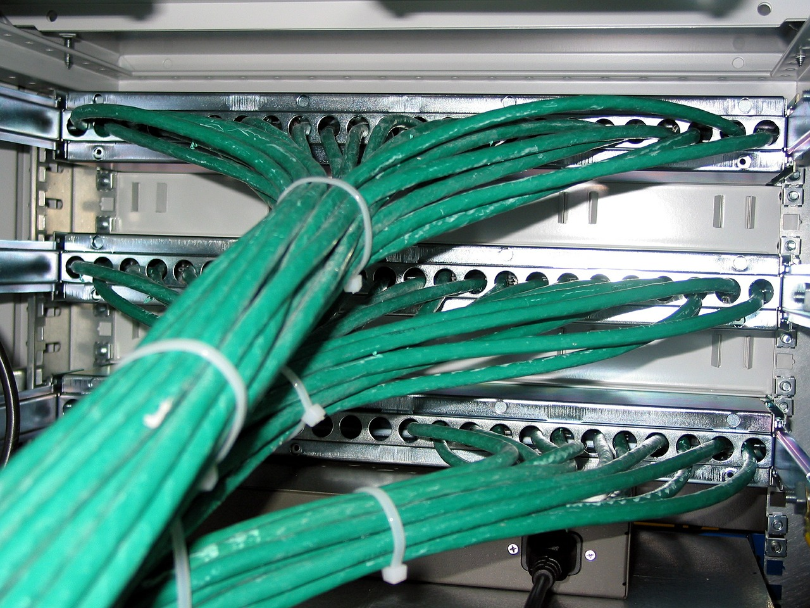

 Una telecomunicación es toda transmisión y recepción de señales de cualquier naturaleza, típicamente electromagnéticas, que contengan signos, sonidos, imágenes o, en definitiva, cualquier tipo de información que se desee comunicar a cierta distancia. Por metonimia, también se denomina telecomunicación (o telecomunicaciones, indistintamente)a la disciplina que estudia, diseña, desarrolla y explota aquellos sistemas que permiten dichas comunicaciones; de forma análoga, la ingeniería de telecomunicaciones resuelve los problemas técnicos asociados a esta disciplina.